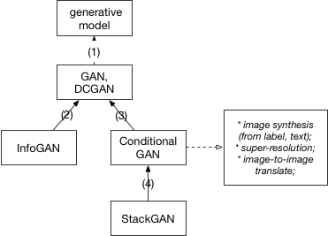
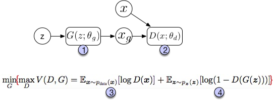
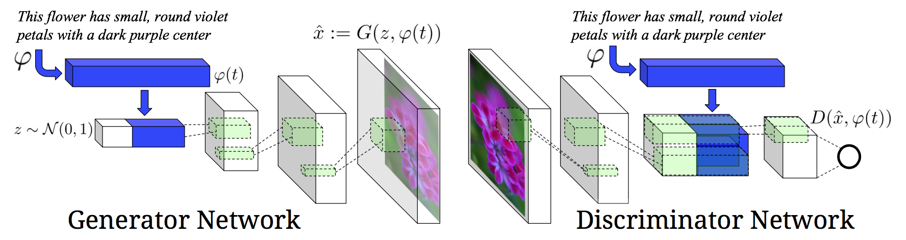

PaperWeekly 第二十期
GAN（Generative Adversarial Nets）研究进展
Model
1、Unsupervised learning
首先我们从generative model说起。generattive model的目的是找到一个函数可以最大的近似数据的真实分布。如果我们用 f(X; 𝜃) 来表示这样一个函数，那么找到一个使生成的数据最像真实数据的 𝜃 就是一个maximum likelihood estimation的过程。问题在于，当数据的分布比较复杂时，我们需要的 f 也会变复杂。现在我们有深度网络结构可以表达这样一个复杂的函数（deep generative model），但是训练过程成为了关键。基于sampling的训练过程显然不是很高效的。因此，如何设计模型以便利用backpropagation来训练网络成为了一个重要的目标。当前两个比较突出的模型实现的就是这个目的，一个是variational autoencoder(VAE)，另一个就是这篇文章的主题generative adversarial nets。
这篇文章会从基本的GAN模型讲起，重点讨论模型公式背后的原理。之后会讨论几篇GAN的扩展工作，希望能够扩展一下大家的思路，也可以加深对GAN模型的理解。下面的关系图大致描述了这些模型之间的继承关系。我们会按照图中的关系一个一个展开。

2、GAN
首先是最经典的GAN模型。由Ian Goodfellow和Bengio等在2014年提出。为了简明扼要，我们直接看图说话。

图中上半部分是GAN模型的基本架构。我们先从一个简单的分布中采样一个噪声信号 z（实际中可以采用[0, 1]的均匀分布或者是标准正态分布），然后经过一个生成函数后映射为我们想要的数据分布 Xg （z 和 X 都是向量）。生成的数据和真实数据都会输入一个识别网络 D。识别网络通过判别输出一个标量，表示数据来自真实数据的概率。在实现上，G 和 D 都是可微分函数，都可以用多层神经网络实现。因此上面的整个模型的参数就可以利用backpropagation来训练得到。
图中的下半部分是模型训练中的目标函数。仔细看可以发现这个公式很像cross entropy，注意D是 P(Xdata) 的近似。对于 D 而言要尽量使公式最大化（识别能力强），而对于 G 又想使之最小（生成的数据接近实际数据）。整个训练是一个迭代过程，但是在迭代中，对 D 的优化又是内循环。所以每次迭代，D 先训练 k次，G 训练一次。
GAN模型最大的优势就是训练简单，但是也有缺点比如训练的稳定性。有趣的是，在这篇文章future work部分，作者提出了5个可能扩展的方向，而现在回过头来看，后续的很多工作真的就是在照着这几个思路填坑。比如第一个conditional generative model就是后面要讲的conditional GAN的思路，而最后一个determing better distribution to sample z from during training则是后面InfoGAN的思路。
下面是来自twitter[9] 的一幅图，很好的总结了各种衍生模型的结构。

2.1 DCGAN
上面Ian J. Goodfellow等人的文章提出了GAN的模型和训练框架，但是没有描述具体的实现，而DCGAN[2] 这篇文章讲的就是用deep convolutional network实现一个生成图片的GAN模型。这篇文章没有在基本模型上有所扩展，但是他描述了很多实现上细节，尤其是让GAN模型stable的方法。所以如果对于GAN的实现有兴趣，这篇文章也是必读。此外，最新NIPS2016也有最新的关于训练GAN模型的总结 [How to Train a GAN? Tips and tricks to make GANs work] (https://github.com/soumith/ganhacks “GAN tricks”)。
3、InfoGAN
在GAN模型中，生成模型的输入是一个连续的噪声信号，由于没有任何约束，即便我们得到一个有效的生成模型，z也不能被很好的解释。为了使输入包含可以解释，更有信息的意义，InfoGAN[7]的模型在z之外，又增加了一个输入c，称之为隐含输入(latent code)，然后通过约束c与生成数据之间的关系，使得c里面可以包含某些语义特征(semantic feature)，比如对MNIST数据，c可以是digit(0-9)，倾斜度，笔画厚度等。具体做法是：首先我们确定需要表达几个特征以及这些特征的数据类型，比如是类别(categorical)还是连续数值，对每个特征我们用一个维度表示ci 。
接下来，利用互信息量来约束c。原理在于，如果 c 和生成的图像之间存在某种特定的对应（如果c是图像的某些特征，则有这样的函数存在），那么c和G(z,c)之间就应该有互信息量。如果是无约束的情况，比如z单独的每一个维度都跟和G(z)没有特定的关系，那么它们之间的互信息量应该接近0。所以加上这个约束之后，要优化的目标函数就变成了
min max V(D,G) = V(D,G) - 𝜆 I(c;G(z,c))
接下来就是如何处理 I(c; G)。由于 I(c;G(z,c)) 的计算需要 p(c|x)，而我们并不知道真实的分布。这时候，我们需要用一个 Q(c|x) 来近似，很显然，Q可以用神经网络来实现。此外， 可以利用reparametrization（见附录）的技巧来简化网络。
在实际中，由于Q和D都是输入 x，而且识别网络D除了可以输出概率，也可以做特征提取，因此Q可以和D共享参数。在正常的D之后，额外加一层full connected layer，利用softmax等可以输出c。这也是图3中的结构。
4、 Conditional GAN
Conditional GAN的基本模型见图3。所谓conditional的意思就是，生成图片的模型变成了 P(X|z, c)，而c是我们额外提供的信息。这里要注意conditional GAN和Info GAN的结构区别
- Info中c信息是需要网络去学习提取的特征，而这里是需要我们输入网络的信息。
- Info中c只输入生成网络，而这里需要同时输入生成和识别网络，以便让网络学习到它们之间的关联。
在Conditional GAN中，随着c的变换可以衍生出很多应用，比如输入可以是label，可以是分类。甚至是另外一个图片，比如可以做image to image的风格转换，也可以做分辨率提升super-resolution。这里我们以Text-to-Image[5] 为例，讲一下conditional GAN的一种建模方法。
同样，先上图：

模型的任务是给定一句文字描述，然后可以生成符合描述的图像。可以看到，网络的输入除了采样噪声z以外还有文字信息。整个任务分为两大部分：第一部分是要对文字进行编码(text encoding)，这部分并不是Conditonal GAN模型的一部分，可以使用RNN或者char-CNN等。文中用的是deep convolutional and recurrent text encoder[4] ，感兴趣可以去看这篇文章[4]。
在模型中，文字信息同时输入 G 和 D 是关键所在，这样网络才能够将文字和图片关联起来。其次，在训练中，原GAN中 D 只需要判断两种数据：real/fake的图片。而这里，D 需要判断（输入）三种数据{real image, right text}，{real image, wrong text}以及{fake image, right text}。
5、 StackGAN
StackGAN[8] 模型本质就是是Conditional GAN，只不过它使用了两层conditional GAN模型，第一层模型 P(X1|z, c) 利用输入的文字信息c生成一个较低分辨率的图片。之后第二层模型 P(X|c,,X1) 基于第一层生成的图片以及文字信息生成更加优化的图片。文中给出的实验效果非常的惊人，可以生成256x256的非常真实的图片。这里不再重复细节。下图为简化的StackGAN模型。

Reference
- Goodfellow, Ian, et al. “Generative adversarial nets.” Advances in Neural Information Processing Systems. 2014.
- Radford, Alec, Luke Metz, and Soumith Chintala. “Unsupervised representation learning with deep convolutional generative adversarial networks.” arXiv preprint arXiv:1511.06434 (2015).
- Reed, Scott, et al. “Generative adversarial text to image synthesis.” arXiv preprint arXiv:1605.05396 (2016).
- Reed, Scott, et al. “Learning Deep Representations of Fine-Grained Visual Descriptions.” arXiv preprint arXiv:1605.05395 (2016).
- Photo-Realistic Single Image Super-Resolution Using a Generative Adversarial Network
- Image-to-Image Translation with Conditional Adversarial Networks
- Chen, Xi, et al. “Infogan: Interpretable representation learning by information maximizing generative adversarial nets.” Advances in Neural Information Processing Systems. 2016.
- Zhang, Han, et al. “StackGAN: Text to Photo-realistic Image Synthesis with Stacked Generative Adversarial Networks.” arXiv preprint arXiv:1612.03242 (2016).
- https://twitter.com/ch402/status/793535193835417601
Appendix
看了几篇关于GAN的文章，发现有几个建模的小trick
- 在生成模型中，之所以可以从一个简单的分布采样，然后通过一个网络（参数需要学习）去近似数据的分布 背后的原理是
Any distribution in d dim can be generated by taking a set of d normal distribution variables. mapping through a sufficiently complicated function. So provided powerful function approximators, we can simply learn a function mapping independent norm distribution z to whatever X.
在模型中，如果目标函数中某个条件概率无法直接得到，那么可以学习一个网络Q去近似。利用KL divergence D{KL}[P||Q] = H(P,Q) - H(P) 以及
D{KL} >= 0 可以推出一个更易优化的上/下界。reparametrization trick 举个例子，比如模型中用一个网络 Q(z|x) 来近似真实的 P(z|x)，我们常用正态分布来建模Q，即
N(μ, 𝛴)（这里 μ 和 𝛴 都是带参数的网络，通过学习得到）。当采样的 x 通过 Q 后就可以得到z。但是由于这一步是随机过程，backpropagation就会中断。这个时候我们就可以利用 N(μ, 𝛴) = N(0, I) ⨉ 𝜮 + μ 将随机过程转移到输入端。先从标准正态分布采样 z0，此时网络 Q 并不直接输出z，而是输出两个参数μ 和 𝛴，之后在通过 z=z0 ⨉ 𝛴 + μ 得到z。由于中间节点变成了常规运算，因此backpropagation可以正常传回输入端。